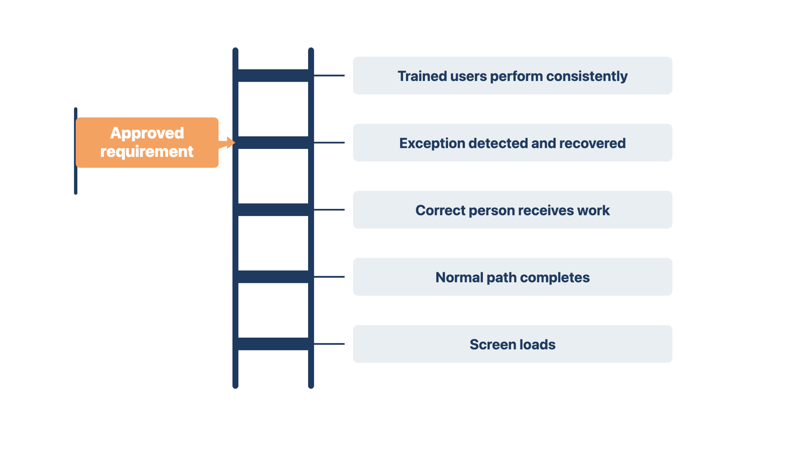
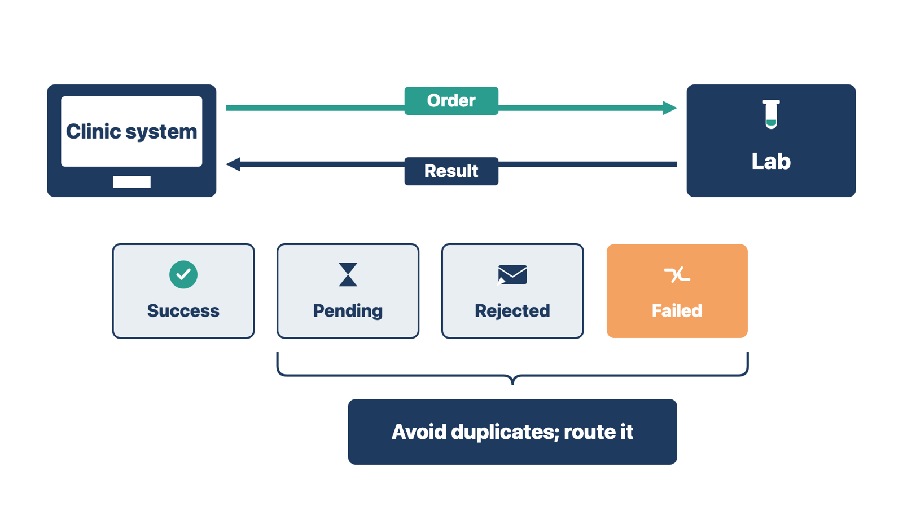
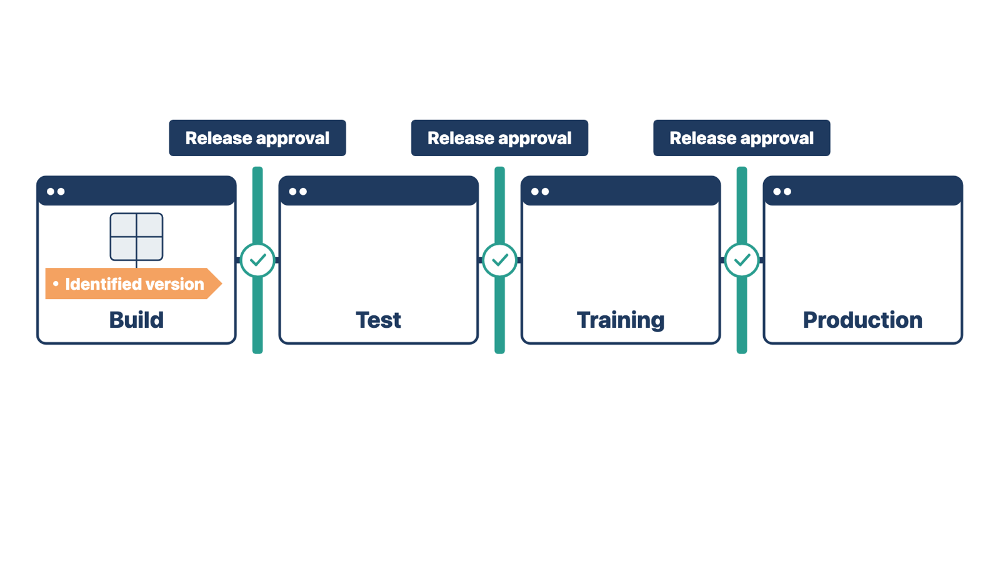

Module 7, Lesson 1: Decide what "it works" must mean
Decide what "it works" must
mean
A team that says "it works" may mean five different things. If you do
not agree on which one the requirement needs, a build can pass QC and
still fail the clinic on day one.
Quality control (QC) is the planned checking that
shows an approved workflow is built correctly and works under expected
conditions. QC starts early. It runs after each build, training,
conversion, integration, and automation step.
"It works" can mean any of these:
the screen loads;
the normal path completes;
the approved requirement is met;
the correct person receives the next piece of work;
the system blocks an action the user is not allowed to take;
the record is complete and can be audited;
an exception is caught and recovered;
the workflow stays safe when an interface or service is down;
trained users can do it the same way every time.
QC uses the approved requirement and its acceptance evidence to pick
the meaning that applies. A build can run without errors and still be
wrong for the clinic. It can also follow the workflow and still break a
security, privacy, billing, data, or safety control.

Figure 7.1. Notice that a loading screen is the lowest meaning of "it works"; the approved requirement sets the level QC proves.
> **Rule:** The approved requirement sets the level of "it works" that QC must prove.
Two examples show the rule:
Example A. A new-patient form loads and saves. The
requirement says a signed copy must reach the front-desk queue. QC
checks the queue, not just the save.
Example B. A refill request reaches the nurse
inbox. The requirement says only nurses and providers may approve
refills. QC also signs in as a medical assistant and confirms the
approval button is blocked.
In both cases, the screen "worked." Only the requirement told QC how
far to test.
Check yourself
Name three different meanings of "it works."
A screen loads and saves with no error. Why might QC still fail
it?
What would you check before you agree that a referral workflow
"works"?
Finish
advanced workflows and train the failure path
These two steps are carried from Module 6. They finish training
work before QC takes over the build.
Staff who know only the normal path will repeat work, create
duplicates, or assume a task is done when an interface fails. Advanced
training prevents that.
Specialty configuration
Specialty workflows often add their own templates, terms, devices,
results, rules, reports, or handoffs. Use the same method as in Modules
4–6:
involve the person who does and owns the work;
map normal and exception paths;
find the source requirements and approvals;
configure under change and access controls;
train by role;
test against approved scenarios;
capture release evidence.
A specialty name is not a workflow. "Cardiology," "pediatrics," or
"behavioral health" names a field of care. It does not tell you how the
work moves. You still need discovery.
Interfaces from the user's
view
An interface is a connection that sends information
between two systems. Module 9 covers interface setup and testing. Here,
you train users on what they see and do:
what information leaves the clinic system;
what result should come back;
how long a normal response takes;
where success, pending status, rejection, or failure shows on
screen;
who owns each side;
what to do when the connection is slow or down;
what users must never repeat, force, or bypass without
approval.
A user does not need to know every technical standard. The user does
need to see that an item failed, avoid sending it twice, and send it to
the right person.
Common examples are claim and eligibility checks, lab and imaging
orders and results, e-prescribing, payments, document signing, and data
exchange with outside systems.

Figure 7.2. Notice that each result state, not just success, has a next action users must be trained on.
> **Rule:** Train users on what failure looks like and what to do, not only on the normal path.
Check yourself
List four things a user should know about an interface.
Why is "behavioral health" not enough to start a specialty
build?
A medical assistant sees an eligibility check stuck on "pending" for
an hour. What should training have taught her to do?
Control the build that QC
receives
A test result is only true for the exact version and environment you
tested. If you do not know what you tested, you cannot trust the
result.
A build is a set of configuration and setup work
delivered as one version. An environment is a separate
copy of the system, such as test, training, or production.
Production is the live system used with real patients.
Promotion means moving a tested version from one
environment to the next.
Before testing, confirm:
the release purpose and the requirements or build items it
includes;
the source and target environments;
what is included: configuration, packages, manual steps, vendor
settings, data, interfaces, devices, automation, and documents;
that the builder's own checks and technical review are done;
the promotion method and its evidence;
known limits and dependencies;
the path for corrections and retests;
who can approve the release for training, user acceptance,
rehearsal, or production.
If the team changes the build during testing, record the new version.
Then decide which results are still valid. Do not carry a pass from one
environment or version into another until you check the promotion and
the affected behavior.
Module 4 ("Hand the approved design into a controlled build") set out
the blueprint, environments, and promotion path. This module applies
that method to QC and release.

Figure 7.3. Notice that each environment gets a named version and its own release approval before the build moves on.
> **Rule:** A pass belongs to one version in one environment until you prove otherwise.
Example A. The referral module passed in test on
build 5.1. In production, the vendor added a manual fax setting. You
check the promotion and rerun the referral tests in production.
Example B. A new check-in form passed in test. The
vendor then moved it to the training environment with an older form
version by mistake. A short check after promotion catches the wrong
version before class.
Both cases show that a matching name or number is not proof. Only a
check in the new place is proof.
Check yourself
What four facts identify the build QC receives?
Why can't you carry a pass from test into production without a
check?
The builder changes a setting halfway through your test run. What do
you do?
Build the QC plan from
requirements
A QC plan tells you what to test and when testing is finished.
Without it, you cannot show the client that the important risks were
covered.
For each module or workflow, gather:
approved requirements;
configuration and document versions;
the role and access model;
acceptance scenarios;
data and environment needs;
expected results;
high-risk areas;
required reviewers;
entry and exit criteria;
defect severity and release rules;
where evidence is stored.
Each test should link to a requirement, risk, control, or known way
the workflow can fail. Free exploration can find useful defects. It
cannot prove coverage on its own.
Entry criteria
Entry criteria are the conditions that must be true
before work enters QC. Typical entry criteria are:
the requirement and its approver are named;
the build version is stable enough to test;
the test environment and access are ready;
approved test data is available;
known limits are written down;
expected results and evidence are defined.
A changing, unfinished build wastes QC time. Its results cannot be
repeated.
Exit criteria
Exit criteria are the conditions that must be true
before a module is released:
planned tests are complete;
results and evidence are recorded;
Critical and High defects are fixed or have a recorded decision
under the approved release rules;
fixes are retested;
regression tests are chosen, run, and recorded;
the proper authority approved any accepted limits;
training materials and job aids are updated if behavior
changed;
the version is approved for the next stage.
Exit criteria are release controls. Agree on them early. Near
go-live, pressure makes every open item look small.
Rule: Agree entry and exit criteria before testing
starts, not when the deadline arrives.
Check yourself
Name three entry criteria and three exit criteria.
Why can't free exploration alone prove coverage?
A fix moved a step on a form, and the job aid still shows the old
step. Which exit criterion is not met, and who should fix it if you own
the training materials?